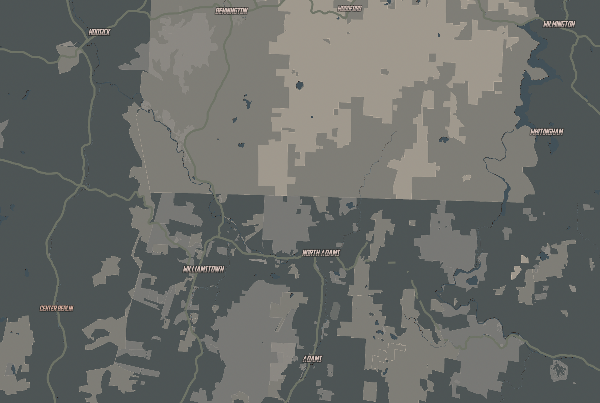
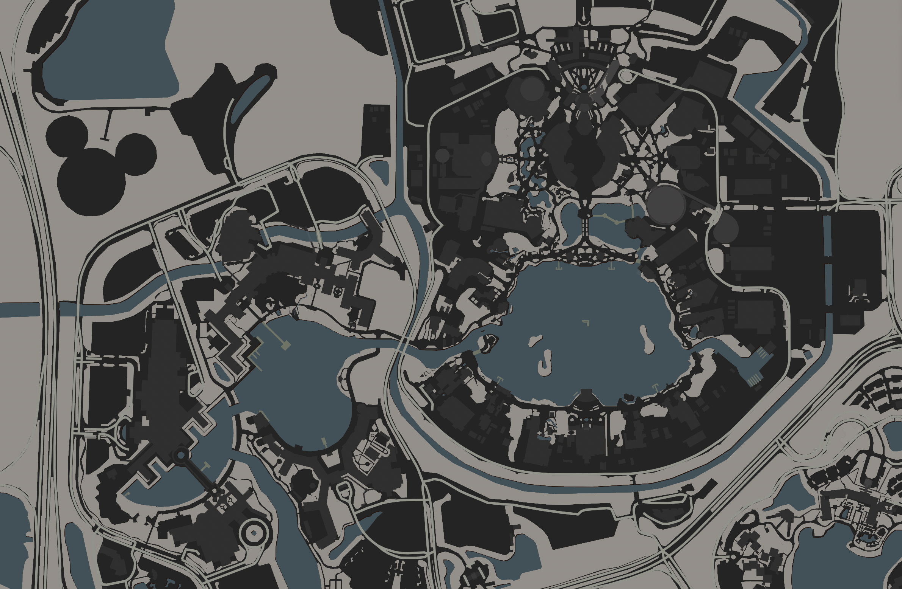

Imperial-Industrial Complexes
My style is called Imperial Industiral Complex and is based on the prison on Narkina 5 as seen in the first season of Andor.
I drew inspiration from the contrasting views from inside the prison and from space, each representing some level of futility felt through the show.
In the map, building footprints are a subdued grayish-green akin to the prison on Narkina 5.
The map "saturates" as you zoom in.



Take a look at a few different geographies, starting with the Mid-Atlantic Ridge.
Boston!
Williamstown, MA.
and of course, Disney World.
Feel free to move around the map.
Credits:
Map created with Mapbox Studio
Data from openstreetmap